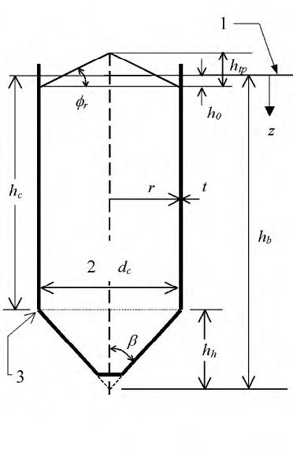
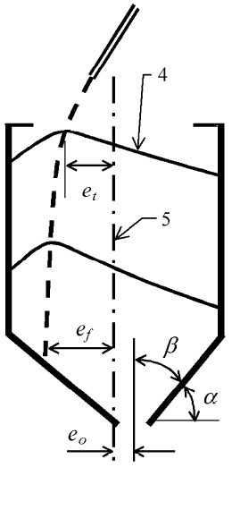
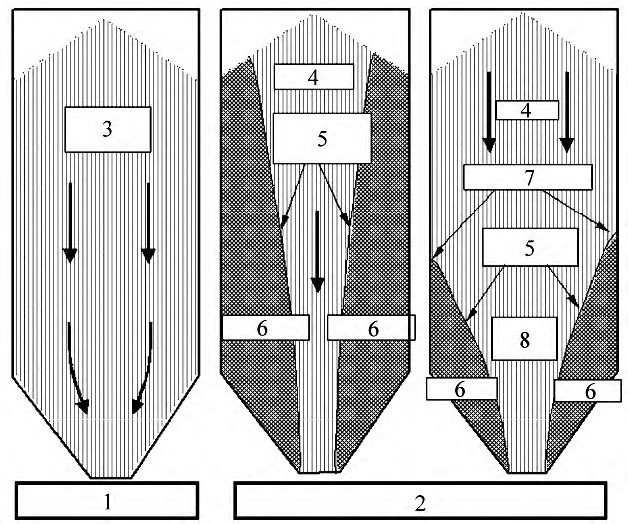
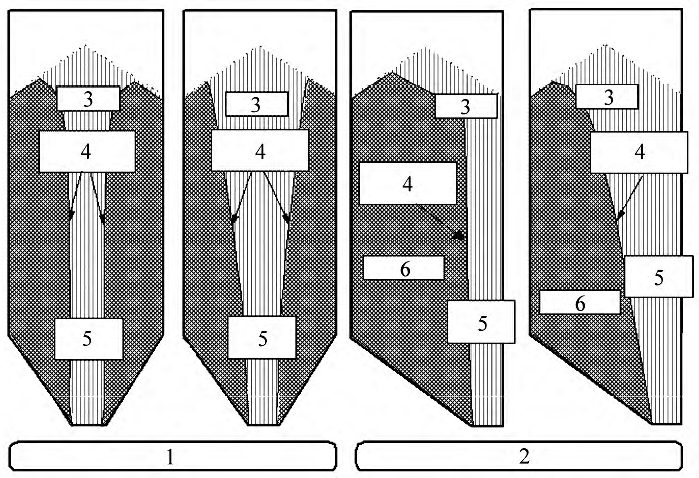
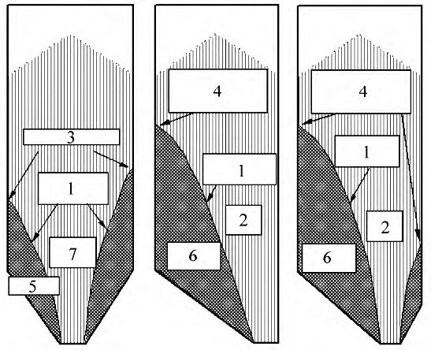
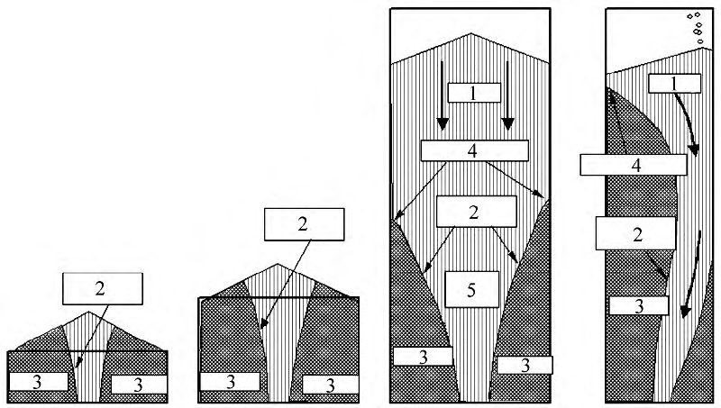
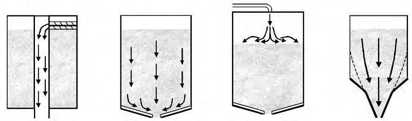
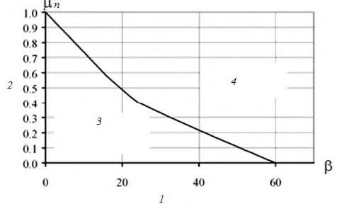
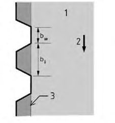

СП 359.1325800.2017 «Силосы стальные вертикальные цилиндрические для хранения сы»
О документе: разработчики, утверждение, регистрация, ключевые слова
СВОД ПРАВИЛ
СП 359.1325800.2017
Издание официальное
1 ИСПОЛНИТЕЛЬ - Закрытое акционерное общество «Центральный ордена Трудового Красного Знамени научно-исследовательский и проектный институт строительных металлоконструкций им. Н.П. Мельникова» (ЗАО «ЦНИИПСК им. Н.П. Мельникова»)
- 2 ВНЕСЕН Техническим комитетом по стандартизации ТК 465 «Строительство»
- 3 ПОДГОТОВЛЕН к утверждению Департаментом градостроительной деятельности и архитектуры Министерства строительства и жилищнокоммунального хозяйства Российской Федерации (Минстрой России)
- 4 УТВЕРЖДЕН приказом Министерства строительства и жилищнокоммунального хозяйства Российской Федерации от 14 декабря 2017 г. № 1668/пр и введен в действие с 15 июня 2018 г.
- 5 ЗАРЕГИСТРИРОВАН Федеральным агентством по техническому регулированию и метрологии (Росстандарт)
В случае пересмотра (замены) или отмены настоящего свода правил соответствующее уведомление будет опубликовано в установленном порядке. Соответствующая информация, уведомление и тексты размещаются также в информационной системе общего пользования - на официальном сайте разработчика (Минстрой России) в сети Интернет
© Минстрой России, 2017
Настоящий нормативный документ не может быть полностью или частично воспроизведен, тиражирован и распространен в качестве официального издания на территории Российской Федерации без разрешения Минстроя России
Дата введения -2018-06-15
УДК 69+624.954(083.74) ОКС 91.040.99
Ключевые слова: стальные вертикальные цилиндрические силосы, хранение сыпучих продуктов, нагрузки и воздействия, объемно-планировочные и конструктивные решения, правила проектирования, расчет конструкций
| ЗАО «ЦНИИПСК им. Мельникова Заместитель директора | В.В. Евдокимов |
|---|---|
| Руководитель разработки, заместитель директора по научно-методической работе | Е. А.Понурова |
| Исполнители: Главный специалист Отдела резервуарных конструкций | А.И. Гуров |
| Главный специалист Отдела резервуарных конструкций | К.К. Рябой |
| ООО НТЦ «Ферммаш» Генеральный директор, к.т.н. | В.И. Стяжкин |
Введение
6 ВВЕДЕН ВПЕРВЫЕ
Настоящий свод правил разработан в соответствии с федеральными законами от 30 декабря 2009 г. № 384-ФЗ «Технический регламент о безопасности зданий и сооружений» [1] и от 22 июля 2008 г. № 123-ФЗ «Технический регламент о требованиях пожарной безопасности» [2].
Настоящий свод правил разработан авторским коллективом ЗАО «ЦНИИПСК им. Н.П. Мельникова» (руководитель организации-разработчика -Н.Г. Силина , руководитель разработки Е.А. Понурова , исполнители - канд. техн. наук А.И. Гуров , канд. техн. наук К.К. Рябой ) при участии ООО НТЦ «Ферммаш» (канд. техн. наук, доц. В.И. Стяжкин ).
1Область применения
2Нормативные ссылки
- В настоящем своде правил использованы нормативные ссылки на следующие документы:
ГОСТ 9.304 -87 Единая система защиты от коррозии и старения. Покрытия газотермические. Общие требования и методы контроля
ГОСТ 21778 -81 (СТ СЭВ 2045 -79) Система обеспечения точности геометрических параметров в строительстве. Основные положения
ГОСТ 27751 -2014 Надежность строительных конструкций и оснований. Основные положения
2015 Прокат для строительных стальных конструкций.
ГОСТ 27772 -Общие технические условия
ГОСТ 31385 -2016 Резервуары вертикальные цилиндрические стальные для нефти и нефтепродуктов. Общие технические условия
- СП 12.13130.2009 Определение категорий помещений, зданий и наружных установок по взрывопожарной и пожарной опасности (с изменением № 1)
СП 16.13330.2017 «СНиП II-23-81* Стальные конструкции»
СП 20.13330.2016 «СНиП 2.01.07-85* Нагрузки и воздействия»
- СП 22.13330.2016 «СНиП 2.02.01-83* Основания зданий и сооружений»
- СП 28.13330.2017 «СНиП 2.03.11-85 Защита строительных конструкций от коррозии»
Правила проектирования
Vertical cylindrical steel silos for bulk products storaging.
Design rules
СП 43.13330.2012 «СНиП 2.09.03-85 Сооружения промышленных предприятий» (с изменением № 1)
СП 71.13330.2017 «СНиП 3.04.01-87 Изоляционные и отделочные покрытия»
СП 108.13330.2012 «СНиП 2.10.05-85* Предприятия, здания и сооружения по хранению и переработке зерна» (с изменением № 1)
Примечание - При пользовании настоящим сводом правил целесообразно проверить действие ссылочных документов в информационной системе общего пользования - на официальном сайте федерального органа исполнительной власти в сфере стандартизации в сети Интернет или по ежегодному информационному указателю «Национальные стандарты», который опубликован по состоянию на 1 января текущего года, и по выпускам ежемесячного информационного указателя «Национальные стандарты» за текущий год. Если заменен ссылочный документ, на который дана недатированная ссылка, то рекомендуется использовать действующую версию этого документа с учетом всех внесенных в данную версию изменений. Если заменен ссылочный документ, на который дана датированная ссылка, то рекомендуется использовать версию этого документа с указанным выше годом утверждения (принятия). Если после утверждения настоящего свода правил в ссылочный документ, на который дана датированная ссылка, внесено изменение, затрагивающее положение, на которое дана ссылка, то это положение рекомендуется применять без учета данного изменения. Если ссылочный документ отменен без замены, то положение, в котором дана ссылка на него, рекомендуется применять в части, не затрагивающей эту ссылку. Сведения о действии сводов правил целесообразно проверить в Федеральном информационном фонде стандартов.
3Термины, определения и обозначения
В настоящем своде правил применены следующие термины с соответствующими определениями:
- 3.1.1 внутренний поток
- Поток части сыпучего продукта при разгрузке, граница которого проходит внутри находящегося в состоянии покоя остального продукта и не соприкасается со стенкой силоса.
- 3.1.2 воронка
- Нижняя коническая часть силоса.
- 3.1.3 зона перехода
- Зона соединения (сопряжения) стенки с днищем.
- 3.1.4 кипящий слой
- Состояние части сыпучего продукта, который при работе пневматических систем выпуска с нагнетанием воздуха или газа становится более однородным (гомогенизация) и приобретает свойства жидкости.
- 3.1.5 массовый поток
- Поток сыпучего продукта при разгрузке, в котором все его частицы двигаются одновременно.
- 3.1.6 низкий силос
- Силос с отношением высоты стенки к диаметру менее 1,0.
- 3.1.7 переход продукта
- Верхняя граница части сыпучего продукта, находящегося при разгрузке силоса в состоянии покоя.
- 3.1.8 порошкообразный сыпучий продукт
- Продукт, средний размер частиц которого менее 0,05 мм.
- 3.1.9 силос
- Наземное строительное сооружение с загрузочным и разгрузочным отверстием, предназначенное для перегрузки или хранения сыпучих продуктов и состоящее из верхней цилиндрической части (стенки), крыши и конического или плоского днища.
- 3.1.10 смешанный поток
- Поток сыпучего продукта при разгрузке, в котором канал текучести на одной части высоты силоса является внутренним, а на другой части высоты соприкасается со стенкой силоса.
- 3.1.11 стенка силоса
- Цилиндрическая часть силоса.
- 3.1.12 сыпучий продукт
- Смесь твердых частиц произвольной формы, находящихся в контакте.
- 3.1.13 центральный поток
- Внутренний поток сыпучего продукта при разгрузке, в котором канал текучести располагается по центру силоса.
- 3.1.14 эксцентричное заполнение
- Заполнение силоса, при котором пик насыпаемой поверхности сыпучего продукта имеет смещение относительно вертикальной оси силоса. В настоящем своде правил применены следующие обозначения: A -поверхность поперечного сечения стенки силоса (площадь поперечного сечения); ak - коэффициент рассеяния или коэффициент пересчета коэффициента горизонтальной нагрузки; a μ - коэффициент рассеяния или коэффициент пересчета коэффициентов трения о стенки; a φ -коэффициент рассеяния или коэффициент пересчета угла внутреннего трения; Cop - параметр сыпучего продукта локальной поверхностной нагрузки (коэффициент увеличения нагрузки); dc - характеристический габаритный размер внутреннего поперечного сечения силоса; ef - наибольший эксцентриситет насыпного конуса на поверхности сыпучего продукта при заполнении; eo - эксцентриситет средней точки сливного отверстия; et - эксцентриситет пика насыпного конуса на поверхности сыпучего продукта при заполненном силосе; hc - высота стенки силоса, измеренная от перехода воронки вплоть до эквивалентной поверхности сыпучего продукта; K -характеристическое значение коэффициента горизонтальной нагрузки; Km - среднее значение коэффициента горизонтальной нагрузки; p - давление; pn - давление от сыпучего продукта, перпендикулярное стенкам воронки; r - эквивалентный радиус силоса ( r = 0,5 dc ); t - толщина стенки силоса; U - внутренняя окружность поперечного сечения стенки силоса; z - глубина под эквивалентной поверхностью сыпучего продукта в заполненном состоянии; α -средний угол наклона стенок воронки по отношению к горизонтальной плоскости; β - угол наклона стенки воронки относительно вертикали; γ - значение удельного веса хранимого сыпучего продукта; μ - характеристическое значение угла трения о стенки на вертикальной стенке силоса; μ m - среднее значение коэффициента трения о стенки между сыпучим продуктом и стенкой силоса; φ r - угол естественного откоса сыпучего продукта [угол, образуемый линией естественного откоса (отвала) сыпучего материала с горизонтальной плоскостью]; φ w - угол трения о стенки (arctg μ) между сыпучим продуктом и стенкой воронки.
4Основные положения
Проектирование стальных вертикальных цилиндрических силосов для сыпучих продуктов и расчет их конструкций следует проводить в соответствии с требованиями СП 20.13330, СП 22.13330, СП 16.13330, СП 108.13330, ГОСТ 27751, ГОСТ 31385, ГОСТ 21778 и настоящего свода правил.
- принимать конструктивные схемы, обеспечивающие необходимую прочность, жесткость и пространственную неизменяемость сооружения в целом, а также его отдельных элементов на всех стадиях возведения и эксплуатации;
- применять конструкции и продукты хранения в соответствии с техническим заданием.
При наличии подсилосного этажа или наземной конвейерной галереи, тоннеля конструкция днища силоса определяется характером сыпучего продукта заполнения, типом разгрузочного оборудования, наличием каналов и активной вентиляции.
Силосы для хранения других сыпучих продуктов следует проектировать в соответствии с СП 43.13330.
5Нагрузки и воздействия
5.1Общие положения
- временные длительные: от веса сыпучих продуктов; равномерного в длительной части горизонтального равномерно распределенного по высоте и периметру давления сыпучих продуктов на стенки силосов и звездочек; трения сыпучих продуктов о стенки силосов; давления сыпучих продуктов на днища силосов; веса технологического оборудования с учетом динамических воздействий от технологического оборудования; крена при неравномерных осадках фундаментов; неравномерно распределенного реактивного давления грунта на подошву фундамента при неравномерной разгрузке силосов; изгиба силосного корпуса при сблокированных силосах;
- кратковременные: возникающие при изменении температуры наружного воздуха; от кратковременной части горизонтального неравномерного давления сыпучих продуктов; давления воздуха, нагнетаемого в силос при активной вентиляции, газации, гомогенизации и пневматической выгрузке сыпучего продукта;
- особые: от давления, развиваемого при возможном взрыве пылевоздушной смеси.
5.2Классы требований к силосам
- класс требований КС-1 - силосы с номинальной емкостью до 1000 т включительно;
- класс требований КС-2 - силосы с номинальной емкостью более 1000 т. Класс требований силоса следует учитывать при назначении:
- требований к материалам, методам изготовления, объемам контроля качества;
- коэффициентов надежности по ответственности.
Классы сооружений по уровню ответственности следует определять в соответствии с приложением А ГОСТ 27751-2014.
5.3Основные расчетные ситуации в силосах
- максимальные горизонтальные нагрузки, перпендикулярные вертикальной стенке силоса;
- максимальные вертикальные нагрузки от трения;
- максимальные вертикальные нагрузки на дно силоса;
- максимальные нагрузки на воронку силоса.
- при заполнении на вертикальные участки стенки;
- при разгрузке на вертикальные участки стенки;
- на воронку при заполнении;
- на воронку при разгрузке;
- при заполнении и разгрузке через выпускное отверстие.
5.4Дополнительные расчетные ситуации
Если насыпной конус при заполнении силоса имеет эксцентриситет (см. рисунок 5.1, б ), то в различных зонах силоса сыпучий продукт приобретает различную плотность, что приводит к несимметричным нагрузкам. Для определения этих нагрузок следует учитывать эксцентриситет заполняющей струи ef .
Таблица 5.1 -Определяющие параметры различных нагрузок
| Устанавливаемое значение | Устанавливаемое значение | Устанавливаемое значение | |
|---|---|---|---|
| Нагрузки | коэффициент трения о стенки µ | коэффициент горизонтальной нагрузки K | угол внутреннего трения φ i |
| Стенка | Стенка | Стенка | Стенка |
| Максимальные горизонтальные нагрузки перпендикулярно вертикальной стенке | Нижнее предельное значение | Верхнее предельное значение | Нижнее предельное значение |
| Максимальные нагрузки на вертикальные стенки от трения | Верхнее предельное значение | Верхнее предельное значение | Нижнее предельное значение |
| Максимальные вертикальные нагрузки на воронку и на дно силоса | Нижнее предельное значение | Нижнее предельное значение | Верхнее предельное значение |
| Стенки воронки | Стенки воронки | Стенки воронки | Стенки воронки |
| Максимальные нагрузки воронки в заполненном состоянии | Нижнее предельное значение для воронки | Нижнее предельное значение | Нижнее предельное значение |
| Максимальные нагрузки воронки при разгрузке | Нижнее предельное значение для воронки | Верхнее предельное значение | Верхнее предельное значение |
Примечания
- 1 Следует учитывать, что угол трения о стенки всегда меньше или равен углу внутреннего трения хранимого сыпучего продукта (т. е. φ wi ≤ φ i ). Это значит, что во всех случаях коэффициент трения о стенки следует принимать не более tg φ i (µ = tgφ w ≤ tgφ i ).
- 2 Нагрузки, перпендикулярные стенкам воронки рn , как правило, самые большие, если трение о стенки в воронке мало, так как вследствие этого малая часть нагрузок в воронке передается трением на стенку.
При расчете следует принимать максимальные нагрузки из всех возможных вариантов.
- массовый поток;
- внутренний поток;
- смешанное течение.
Примечание - Низкие силосы с концентрической разгрузкой с помощью силы тяжести и силосы с механической системой разгрузки, находящейся на поверхности сыпучего продукта, которая обеспечивает образование внутреннего потока (см. рисунки 5.5, а , б , и 5.6, а ), выполняют условия 5.4.3. Центральная труба с боковыми разгрузочными отверстиями также может обеспечивать это условие, то есть образование внутреннего потока в трубе.


а - геометрические размеры; б - эксцентриситеты; в - нагрузки; г - форма поперечного сечения; 1 - эквивалентная поверхность сыпучего продукта; 2 - внутренний размер; 3 -зона перехода; 4 - профиль поверхности при полном силосе; 5 - ось силоса
Рисунок 5.1 - Геометрические размеры и нагрузки в силосе

а - массовый поток; б - внутренний поток; в - смешанное течение потока; 1 - схема с массовым потоком; 2 - схемы с центральным потоком; 3 - весь продукт в движении; 4 -текущий продукт; 5 - границы канала течения; 6 - продукт в покое; 7 - переход продукта; 8 - воронка течения
Рисунок 5.2 - Основные модели потока (профили текучести)

а - параллельный поток; б - конусный поток; в - эксцентрический параллельный поток; г - эксцентрический конусный поток; 1 - схемы с параллельным потоком; 2 - схемы с эксцентрическим потоком; 3 - текущий продукт; 4 - границы канала течения; 5 - канал течения; 6 - продукт в покое
Рисунок 5.3 - Профили текучести продукта с различными каналами течения

- а - концентрическое смешанное течение; б - полностью эксцентрическое смешанное течение; в - частично эксцентрическое смешанное течение; 1 - границы канала течения; 2 - зона течения; 3 - переход продукта; 4 - переход продукта меняется по периметру силоса; 5 - границы канала течения; 6 - сыпучий продукт в покое; 7 - воронка течения
Рисунок 5.4 - Профили текучести со смешанным течением продукта

а - силос с опорной стенкой; б - низкий силос; в - гибкий силос; г - силос с большой гибкостью; 1 - сыпучий продукт в покое; 2 - границы канала течения; 3 - эффективная воронка течения; 4 - переход продукта; 5 - течение продукта
Рисунок 5.5 - Соотношение сторон (гибкость) при смешанных и внутренних моделях потока продукта
- 1) сыпучий продукт образовывает насыпной конус в заполненном силосе;
- 2) сыпучий продукт не образовывает насыпной конус в заполненном силосе. Поверхность сыпучего продукта при определенных обстоятельствах остается ровной независимо от угла скоса и эксцентриситета при эксцентричном заполнении (см. рисунок 5.6, в ). В этом случае эксцентриситеты еf и et следует принимать равными нулю. а - механическая разгрузка с концентрическим давлением; б - подача воздуха, которая увеличивает скольжение, что способствует массовому потоку; в - пневматическое заполнение порошкообразного сыпучего продукта, обеспечивающее почти ровную его поверхность; г - расширенная воронка, вызывающая массовый поток только в нижней части

Рисунок 5.6 - Специальные устройства для заполнения и разгрузки
5.5Учет воздействий от взрывов
Силосы, в которых возможен аварийный взрыв пылевоздушной смеси, должны быть оборудованы:
- системами предотвращения и подавления взрыва;
- легкосбрасываемыми конструктивными элементами.
5.6Сыпучий продукт
5.6.1 Общие положения
Для определения нагрузок на силос от сыпучего продукта необходимо учитывать следующие влияния:
- изменение параметров сыпучего продукта;
- изменение трения на стенке силоса;
- геометрия силоса;
- методы заполнения и разгрузки.
При необходимости следует определять вид профиля текучести (массовый или центральный поток) по рисунку 5.7.

1 - половинный максимальный угол β воронки; 2 - коэффициент трения о стенки μ n воронки; 3 - зона с возможностью массового потока; 4 - зона с центральным потоком
Рисунок 5.7 - Условия, при которых появляются давления вследствие массового потока в конической воронке
5.6.2 Определение характеристик сыпучего продукта
Характеристики сыпучего продукта, принимающиеся для расчета, должны учитывать возможные изменения свойств вследствие изменений в составе, методах производства, распределении размера зерна, содержания влаги, температуры, возраста и электрического заряда в процессе обращения.
Характеристики сыпучего продукта следует определять по упрощенному методу 5.6.3. Для каждого сыпучего продукта допускается применять общие характеристики по таблице 5.2.
Коэффициенты трения сыпучих продуктов о стенки µ должны учитывать шероховатость поверхностей стенок, вдоль которых они скользят. Различные категории поверхностей стенок перечислены в таблице 5.3.
При необходимости осуществляется соответствующая оценка зоны контакта «сыпучий продукт-стенка» (рисунок 5.8).
Примечание - Для профилей поверхности стенки, которая подобна профилю, представленному на рисунке 5.8, б , коэффициент aw допускается приближенно принимать равным 0,2.

а - профиль с трапециевидными складками; б - профиль с волнами синусоидальной формы; 1 - сыпучий продукт; 2 - поток сыпучего продукта; 3 - скользящая поверхность
Рисунок 5.8 - Габаритные размеры профилей поверхности стенки
Коэффициент сыпучего продукта Сор для локальной поверхностной нагрузки определяют по таблице 5.2.
Таблица 5.2 -Характеристики сыпучего продукта
| Удельный вес б) γ | Удельный вес б) γ | Угол скоса φ r | Угол внутреннего трения φ | Угол внутреннего трения φ | Коэффициент горизонтальной нагрузки K | Коэффициент горизонтальной нагрузки K | Коэффициент трения о стенки μ (μ = tg φ w ) | Коэффициент трения о стенки μ (μ = tg φ w ) | Коэффициент трения о стенки μ (μ = tg φ w ) | Коэффициент трения о стенки μ (μ = tg φ w ) | Параметр | |
|---|---|---|---|---|---|---|---|---|---|---|---|---|
| Вид сыпучего продукта а) | γ l | γ u | Угол скоса φ r | φ im | а φ | K m | a k | категория поверх- ности стенки D1 | категория поверх- ности стенкиD2 | категория поверх- ности стенкиD3 | a µ | локальной поверхностной |
| Вид сыпучего продукта а) | Нижнее значение | Верхнее значение | Угол скоса φ r | Среднее значение | Коэффициент пересчета | Среднее значение | Коэффициент пересчета | Среднее значение | Среднее значение | Среднее значение | Коэффициент пересчета | нагрузки |
| Вид сыпучего продукта а) | кH/м³ | кH/м³ | град | град | Среднее значение | Коэффициент пересчета | Параметр | |||||
| Общий сыпучий продукт в) | 6,0 | 22,0 | 40 | 35 | 1,3 | 0,5 | 1,5 | 0,32 | 0,39 | 0,5 | 1,4 | 1,0 |
| Бетонный гравий | 17,0 | 18,0 | 36 | 31 | 1,16 | 0,52 | 1,15 | 0,39 | 0,49 | 0,59 | 1,12 | 0,4 |
| Алюминий | 10,0 | 12,0 | 36 | 30 | 1,22 | 0,54 | 1,2 | 0,41 | 0,46 | 0,51 | 1,07 | 0,5 |
| Смесь концентрированного комбикорма | 5,0 | 6,0 | 39 | 36 | 1,08 | 0,45 | 1,1 | 0,22 | 0,3 | 0,43 | 1,28 | 1,0 |
| Комки концентрированного комбикорма | 6,5 | 8,0 | 37 | 35 | 1,06 | 0,47 | 1,07 | 0,23 | 0,29 | 0,37 | 1,2 | 0,7 |
| Ячмень* | 7,0 | 8,0 | 31 | 28 | 1,14 | 0,59 | 1,11 | 0,24 | 0,33 | 0,48 | 1,16 | 0,5 |
| Цемент | 13,0 | 16,0 | 36 | 30 | 1,22 | 0,54 | 1,2 | 0,41 | 0,46 | 0,51 | 1,07 | 0,5 |
| Цементный клинкер | 15,0 | 18,0 | 47 | 40 | 1,2 | 0,38 | 1,31 | 0,46 | 0,56 | 0,62 | 1,07 | 0,7 |
| Уголь* | 7,0 | 10,0 | 36 | 31 | 1,16 | 0,52 | 1,15 | 0,44 | 0,49 | 0,59 | 1,12 | 0,6 |
| Угольная пыль* | 6,0 | 8,0 | 34 | 27 | 1,26 | 0,58 | 1,2 | 0,41 | 0,51 | 0,56 | 1,07 | 0,5 |
| Кокс | 6,5 | 8,0 | 36 | 31 | 1,16 | 0,52 | 1,15 | 0,49 | 0,54 | 0,59 | 1,12 | 0,6 |
| Зола | 8,0 | 15,0 | 41 | 35 | 1,16 | 0,46 | 1,2 | 0,51 | 0,62 | 0,72 | 1,07 | 0,5 |
| Мука* | 6,5 | 7,0 | 45 | 42 | 1,06 | 0,36 | 1,11 | 0,24 | 0,33 | 0,48 | 1,16 | 0,6 |
| Куски железа | 19,0 | 22,0 | 36 | 31 | 1,16 | 0,52 | 1,15 | 0,49 | 0,54 | 0,59 | 1,12 | 0,5 |
| Гидроокись кальция | 6,0 | 8,0 | 34 | 27 | 1,26 | 0,58 | 1,2 | 0,36 | 0,41 | 0,51 | 1,07 | 0,6 |
|---|---|---|---|---|---|---|---|---|---|---|---|---|
| Известняковая мука | 11,0 | 13,0 | 36 | 30 | 1,22 | 0,54 | 1,2 | 0,41 | 0,51 | 0,56 | 1,07 | 0,5 |
| Кукуруза* | 7,0 | 8,0 | 35 | 31 | 1,14 | 0,53 | 1,14 | 0,22 | 0,36 | 0,53 | 1,24 | 0,9 |
| Фосфат | 16,0 | 22,0 | 34 | 29 | 1,18 | 0,56 | 1,15 | 0,39 | 0,49 | 0,54 | 1,12 | 0,5 |
| Картофель | 6,0 | 8,0 | 34 | 30 | 1,12 | 0,54 | 1,11 | 0,33 | 0,38 | 0,48 | 1,16 | 0,5 |
| Песок | 14,0 | 16,0 | 39 | 36 | 1,09 | 0,45 | 1,11 | 0,38 | 0,48 | 0,57 | 1,16 | 0,4 |
| Шлаковый клинкер | 10,5 | 12,0 | 39 | 36 | 1,09 | 0,45 | 1,11 | 0,48 | 0,57 | 0,67 | 1,16 | 0,6 |
| Соевые бобы | 7,0 | 8,0 | 29 | 25 | 1,16 | 0,63 | 1,11 | 0,24 | 0,38 | 0,48 | 1,16 | 0,5 |
| Сахар* | 8,0 | 9,5 | 38 | 32 | 1,19 | 0,5 | 1,2 | 0,46 | 0,51 | 0,56 | 1,07 | 0,4 |
| Комки сахарной свеклы | 6,5 | 7,0 | 36 | 31 | 1,16 | 0,52 | 1,15 | 0,35 | 0,44 | 0,54 | 1,12 | 0,5 |
| Пшеница* | 7,5 | 9,0 | 34 | 30 | 1,12 | 0,54 | 1,11 | 0,24 | 0,38 | 0,57 | 1,16 | 0,5 |
Примечание - Для сыпучих продуктов, не перечисленных в настоящей таблице, характеристики допускается принимать по результатам испытаний и по СП 108.13330.
Таблица 5.3 -Категории поверхностей стенок
| Категория | Поверхность стенки | Примерные материалы |
|---|---|---|
| D1 | Незначитель- ное трение (очень гладкая) | Холоднокатаная нержавеющая сталь; полированная нержавеющая сталь; поверхности с покрытием - покрытие рассчитано на незначительное трение; алюминий; экструдированный полиэтилен высокой плотности а) |
| D2 | Среднее трение (гладкая) | Карбоновая сталь с легкой ржавчиной на поверхности (сварная или соединенная винтами); прокат из нержавеющей стали; гальванизированная углеродистая сталь; поверхности с покрытием - покрытие рассчитано против коррозии или истирания |
| D3 | Большое трение (шероховатая) | Старая (корродировавшая) углеродистая сталь; износостойкая сталь; керамическая плитка (плиты) |
| D4 | Прочие | Профилированные листы с горизонтальными прорезями; нестандартные стенки с глубоким профилированием |
5.6.3 Упрощенный метод определения характеристик сыпучих материалов
Характеристики наиболее распространенных сыпучих продуктов следует определять по таблице 5.2. Указанные в таблице значения удельного веса γ соответствуют верхнему значению, характеристики трения о стенки µ m , отношения горизонтальной нагрузки Km и угла внутреннего трения φ im представляют средние значения этих величин.
Для определения параметров µ, K и φ i перечисленные значения µ m , Km и φ im следует перемножать с так называемыми коэффициентами конверсии или пересчета или делиться на них. Коэффициенты пересчета а указаны в таблице использовать
- 5.2. При расчете максимальных нагрузок необходимо следующие комбинации:
| - верхнее значение - K = а к K m ; | (5.1) |
|---|---|
| - нижнее значение - K = K m / а K ; | (5.2) |
| - верхнее значение - µ = а µ µ m ; | (5.3) |
| - нижнее значение - µ = µ m / a µ ; | (5.4) |
| - верхнее значение - φ i = а φ φ im ; | (5.5) |
| - нижнее значение - φ i = φ im / а φ ; | (5.6) |
При определении воздействий на силосы класса КС-1 вместо верхнего и нижнего значений допускается использовать средние значения µ m , Km и φ im .
Сцепление сыпучих материалов следует определять при уровне давления, которое соответствует уровню давления в диапазоне максимального вертикального давления заполнения.
Значения коэффициента сыпучего продукта для локальной поверхностной нагрузки Сoр для наиболее распространенных сыпучих продуктов принимают по таблице 5.2.
Примечание - Коэффициент сыпучего продукта для локальной поверхностной нагрузки Сoр определен на основании соответствующих экспериментальных данных.
6Материалы и их расчетные сопротивления
7Объемно-планировочные и конструктивные решения
7.1Общие положения
Для муки, мучнистых и других трудносыпучих продуктов для отделки всей поверхности стенок стальных силосов или их нижней части, а также для выпускных воронок следует применять составы согласно требованиям СП 71.13330.
7.2Основные требования к конструкциям стенок стальных силосов
7.3Основные требования к конструкциям днищ
7.4Особенности возведения фундаментов для силосов с плоским днищем
7.5Основные требования к конструкциям круглого конического покрытия
8Расчет конструкций
8.1Цилиндрические стенки
- от равномерно распределенного по периметру стенки горизонтального давления от сыпучего продукта;
- кольцевого горизонтального давления от сыпучего продукта с учетом местных повышений давления;
- локального горизонтального давления.
Таблица 8.1 -Коэффициент надежности по ответственности n
| Класс силоса по 5.2.1 | Уровень ответственности | Значение n |
|---|---|---|
| КС-2 | Нормальный | 1,1 |
| КС-1 | Нормальный | 1,0 |
Таблица 8.2 -Коэффициенты условий работы основных конструктивных элементов силоса с
| Наименование конструктивного элемента силоса | Значение с |
|---|---|
| Стенка | 0,8 |
| Днище | 0,8 |
| Крыша | 1,0 |
| Зона сопряжения стенки с днищем при проверке прочности на дополнительные местные напряжения с учетом развития пластических деформаций | 1,4 |
8.2Воронки и днища
8.3Коническое покрытие
8.4Опорные элементы силоса
9Основные требования к коррозионной стойкости и защите от коррозии
10Противопожарные мероприятия
- охлаждение растительного сырья с помощью активной вентиляции;
- контроль газовой среды в свободных объемах с помощью переносных газоанализаторов; в случае превышения нижнего концентрационного предела должны включаться вентиляторы в покрытии;
- перекачка растительного сырья в другие емкости при повышении температуры зерна;
- срочный выпуск растительного сырья из силоса.
Библиография
- [1] Федеральный закон от 30 декабря 2009 г. № 384-ФЗ «Технический регламент о безопасности зданий и сооружений»
- [2] Федеральный закон от 22 июля 2008 г. № 123-ФЗ «Технический регламент о требованиях пожарной безопасности»